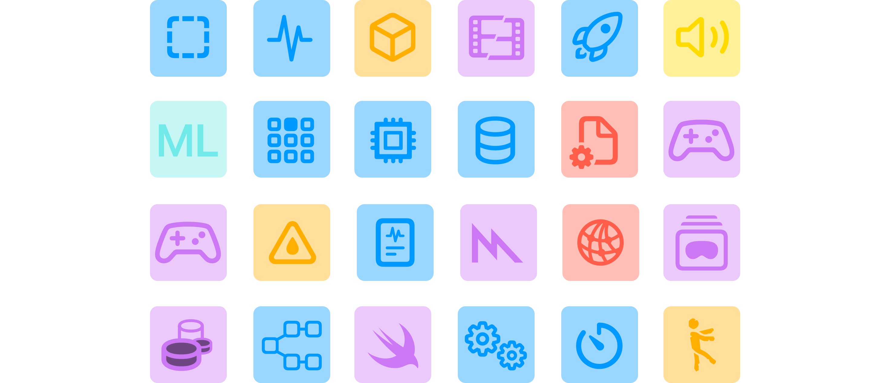

Почему и когда писать тесты?
В данной главе я не даю четкий ответ на вопрос — «Где и когда нужно писать тесты». Здесь ты прочтешь размышления, а решение принимай сам.
Немного определения
Тест — это процедура, которая позволяет либо подтвердить, либо опровергнуть работоспособность программы.
Шаблонный ответ
Зачастую статьи мигрируют из одного сайта во второй, третий и т.д., немного изменяя формулировки, но в конечном итоге ответ являются шаблонным:
- Тесты помогают предотвратить плохое и сделать все хорошее.
- Заказчик попросил написать тесты, потому что прочитал статью на сайте и считает, что приложение без тестов — обречено.
- Или другой классический ответ — если это простая утилита/сервис, то тесты не нужны. А вот в дальнейшем при разростании кодовой базы — тесты крайне необходимы.
Так ли это на самом деле? Является само по себе написание тестов — спасением? Спасением от багов, от человеческого фактора, от регрессий? Почему простая утилита не можем быть создана с помощью сложного алгоритма, а все возможные варианты этого алгоритма будет сложно протестировать?
А если тестировать только бизнес логику, а часть ответственности переложить на разработчика бэкенда и QA?
Усложняем выражение
Каждая переменная вносит сложность в принятии решения — писать тесты для модуля, сделать шаблонные тесты для сетевого слоя, а может ограничиться только тестами бизнес логики? Позволяет ли текущий проект выделить время для тестов? А если менеджер проекта вместо с продакт овнером хочет только результат и фичу побыстрее?
Вопросов стало только больше. А что со статистикой?
Приблизительная статистика
Точных данных нет, это лишь приблизительные цифры.
| Период | Средний процент покрытия (приблизительно) | Комментарии |
|---|---|---|
| 1980-е | <10% | Покрытие тестами редко измерялось. Основной упор — на ручное тестирование и отладку. Unit testing практически отсутствовало. |
| 2000-е (~20 лет назад) | ~20–30% | С ростом TDD и появлением JUnit/NUnit/SUnit unit-тесты становятся популярнее, но всё ещё не повсеместно. |
| 2010-е (~10 лет назад) | ~30–50% | Широкое распространение CI/CD, инструменты вроде SonarQube, Xcode Coverage, Istanbul JS. Покрытие стало KPI в некоторых командах. |
| 2020-е (~5 лет назад и сейчас) | ~40% в среднем. ~50–80% в командах финтеха и прочих. | TDD, BDD, автоматизация, тестовые фреймворки интегрированы в процессы. Покрытие стало стандартом качества в agile-командах. Большие разницы между индустриями. |
Ознакомился со статистикой? Сразу возникли вопросы:
- Почему программы из условных 80-ых были более надежными, если тесты почти не писали?
- Почему современные программы с покрытием в 60-80% менее надежны?
Может возникнуть ощущение, что таблица не правильная и проценты должны распологаться в обратном порядке: программы из 1980-ых были более надежными, значит покрытием тестов достигало 50-80%.
Однако это не так.
Основной упор был на правильность работы программы, на бизнес логику, а не на красивые цифры в 80-97%
Важно помнить:
- 100% покрытие не всегда оправдано: последние 5–10% могут потребовать непропорционально больше усилий.
- Высокий процент покрытия ≠ высокому качеству работы программы: важно не только количество, но и качество тестов. Нет необходимости писать тесты ради тестов или потому что так принято, поэтому и я напишу тоже!
И еще один пример из мира Open Source разработки. Существует 2 мобильных приложения, хранящихся на гитхабе:
- Первое приложение покрыто тестами на 83%
- Второе вообще без тестов.
Вопрос с подвохом — у которого их них открыто множество Issue с багами?
Зачем создавать новый инструмент для тестирования
Простой вопрос — для чего был создан SwiftUI? Зачем?
Ведь UIKit обкатан, стабилен, предсказуем, есть устоявшиеся практики и на нем можно писать еще 20 или 50 лет!
Только не нужно отвечать в стиле «кривая обучения проще, экраны можно проектировать быстрее, соответсвенно MVP можно выпускать быстрее». Это все имеет место быть, но настоящий ответ иной.
Все дело в том, что мир постоянно меняется.
Вместо с ним меняются требования, приходят новые практики, а старые забываются. Мощность компьютеров возрастает, а на современном мобильном телефон можно запустить настольную операционную систему. Условно 10-15 лет назад написать мобильное приложение для Symbian OS было намного проблемнее, чем сейчас создать новый проект в Xcode.
За последние конференции WWDC инженеры из представили множество различных интрументов для профайлинг SwiftUI, Swift Concurrency и другие.

Именно поэтому текущая библиотека не содержит UIApplication метрик. Потому что с помощью новых инструментов ты можешь увидеть скорость вычисления body, выявить причину зависания вью и увидеть как работают асинхронные задачи.
Именно эти инструменты позволяют узко «тестировать» конкретные ситуации, будь то частое переключение между главным и кастомным глобальным актором или hang на 2 секунды во вью.
Тесты эволюционировали.
Могли ли инженеры Купертино предоставить возможность тестировать SwiftUI вью? Могли!
Инженеры из имеют доступ к приватным фреймворкам, таким как AttributeGraph, где можно увидеть:
- Как создается witness таблица для
SwiftUI._VStackLayout - Как инициализируется
SwiftUI._VariadicView.Tree.init - Как легко можно вызвать методы из
SwiftUI.Tracingдля отладки - Увидеть граф вьюх в
SwiftUI.ViewGraphи вызвать методSwiftUI.ViewGraph.beginNextUpdate(at: SwiftUI.Time) - Получить доступ к методу
SwiftUI.ViewRendererHost.updateGraph()для обновления графа вьюх и т.д.
Да, могли бы предоставить доступ, чтобы протестировать хранилище VStack, узнать есть ли кнопка в ирерархии вью… но этого не случилось.
Для этих целей существуют инструменты.
Так как же мне поступить?
Тебе хочется сделать упор на техническом качество, а не строгое следование процессу. Но в реальном мире присутствует непредсказуемость, планы часто меняются, а техническое качество страдает в угоду процессу:
warning
«Иван! Задачу нужно было сделать еще вчера!»
Возможно ты не согласен с мыслями из этой главы полностью. Возможно согласен частично. Так или иначе, у инженеров из есть своё виденье по части эволюции тестов.
Будь это не так, то Swift Testing предоставлял возможность тестировать акторы, нетруктурированные задачи и вьюхи. Все те возможности, которые поддерживаются в инструментах.